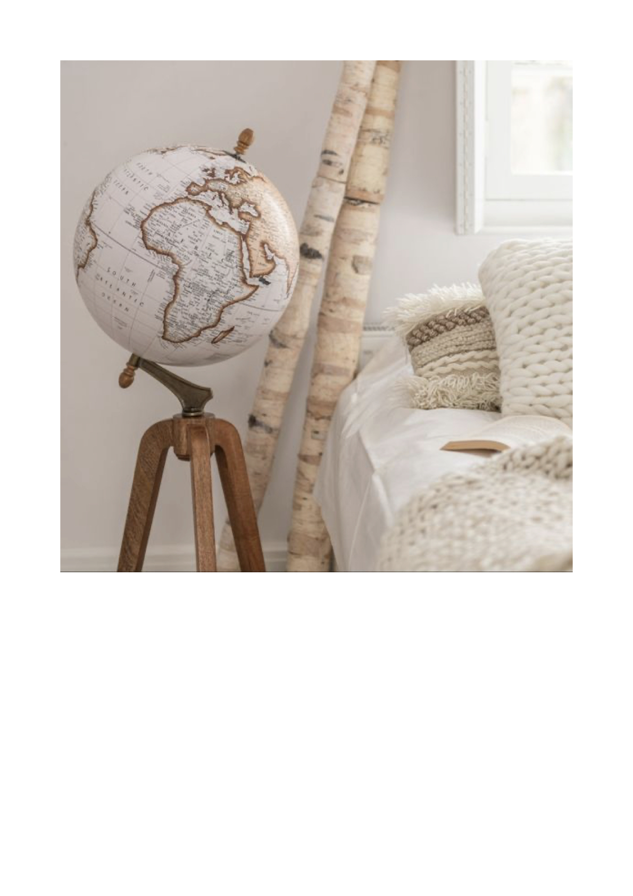
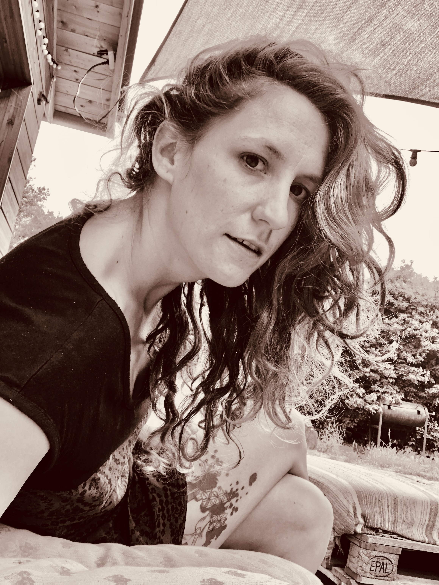
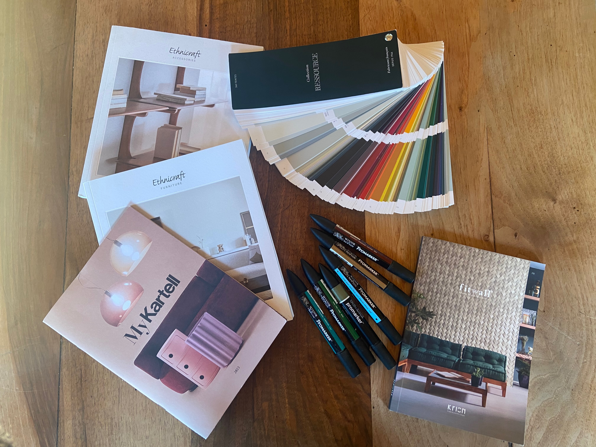
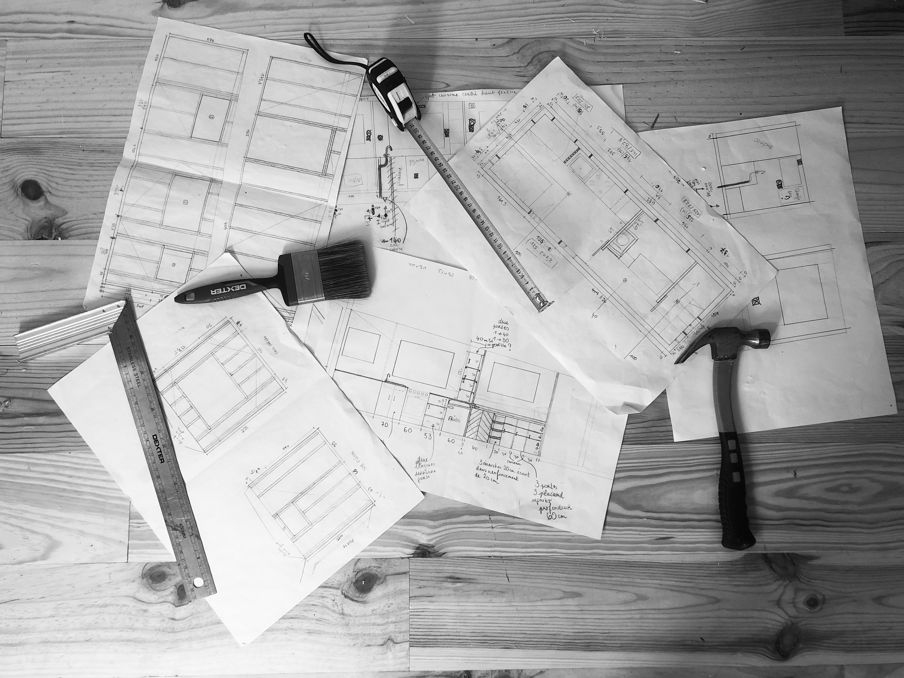
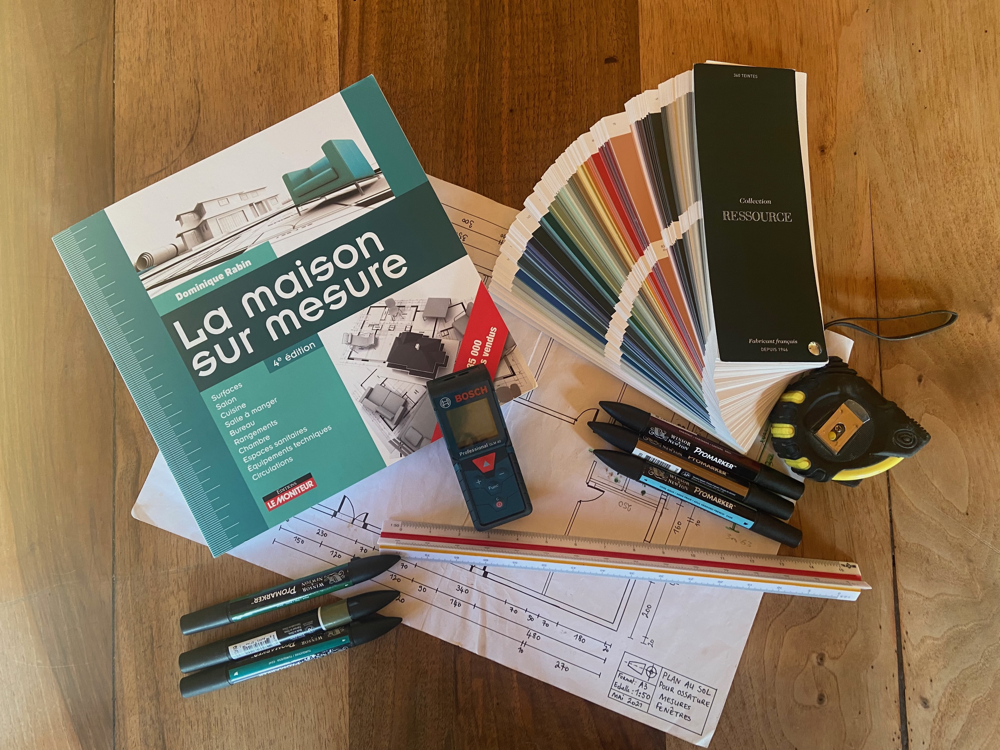
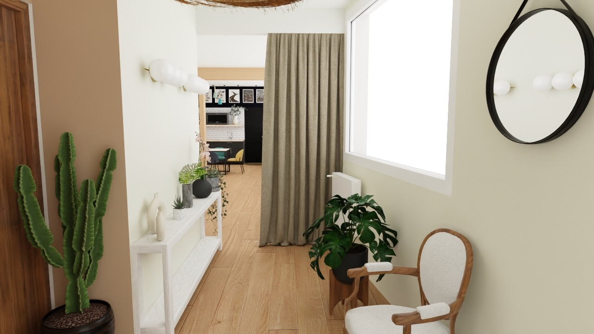
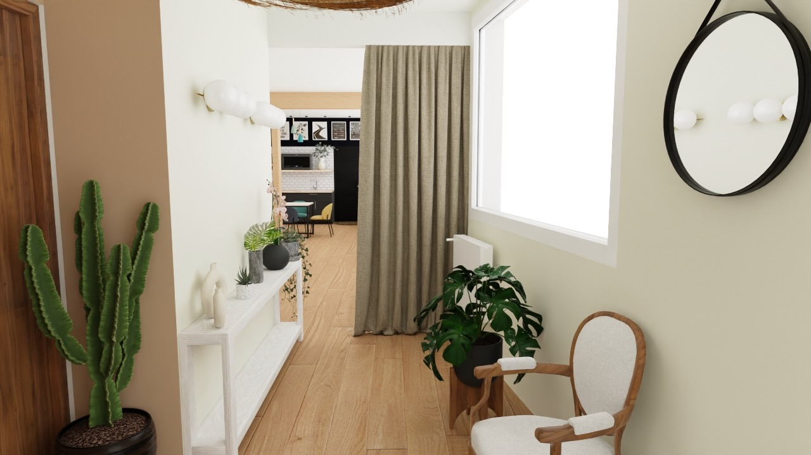

Décoratrice d’intérieur pour vous guider et vous suivre dans vos aventures en rénovation, décoration et agencement.
Je mets en lumière les zones d’ombres de votre maison et de votre esprit à son sujet, joue avec les couleurs, les matières et matériaux pour donner le sentiment et l’ambiance voulu à une pièce.
Ma vision professionnelle des espaces perçoit le potentiel de chaque lieu, je prends en compte les contraintes techniques, vos besoins et envies, pour vous suggérer la meilleure possibilité d’agencement.
J’interviens dans le Vaucluse et alentour pour les particuliers et professionnels
• Présentation •
Passionnée des cultures du monde, je tire mon inspiration de mes voyages passés et à venir à travers le monde. J’aime les gens, j’ai une oreille attentive et compréhensive qui me permet de retranscrire les attentes de mes clients et leur - être - dans leur intérieur.
J’ai commencé par une formation de peintre en bâtiment à l’âge de 16 ans, puis l’appel de la liberté et de la vie a fait que je suis partie sur les routes avec mon sac à dos et mon chien, une vie de bohème en camion aménagé, avec les copains et l’horizon droit devant nous. L’Amour est ensuite passé par là : résultat 2 enfants, une maison en ossature bois en autoconstruction, la sédentarisation, mais toujours des voyages, en famille maintenant.
Je me suis initiée à la décoration et à l'agencement avec la création d’habitats mobiles et légers, puis j’ai fait les plans et l’agencement de ma propre maison. Ça a été une évidence pour moi d’en faire mon métier, alors j’ai décidé de me former avec la formation en décoration agencement d’intérieur à l’ Atelier école déco à Avignon, pour avoir toutes les clés en mains, et guider au mieux mes clients dans leurs projets.
Après cette vie bohème, cette vie de maman, il était temps pour moi de devenir une femme accomplie en créant mon entreprise, faire ce que je fais le mieux avec passion, agencer et décorer des espaces de vie : roulotte, camion aménagé, tiny house, maison… Peu importe le lieu et la taille de celui-ci, l’important est d’être chez soi et de s’y sentir bien.
• Prestations •
Conseils déco
Je propose mes services pour vous aider à changer votre décoration, un renouveau en toute simplicité, le choix de couleurs avec un nuancier, l’intégration de mobilier nouveau et ou ancien en gardant une harmonie dans votre lieu de vie. Ceci se fait sur la base de planches d’inspirations pour vous donner un aperçu de ce à quoi ressemblerait votre intérieur. Une shopping-list vient compléter ce service.
À partir de 200euros TTC
Agencement et décoration intérieur
Accompagnement complet pour l’agencement et la décoration de votre intérieur, je prends note de vos attentes, vos envies, vos besoins et vos contraintes, je vous suis tout au long du projet de rénovation. Ceci comprend :
- La réalisation de l'agencement
- La sélection des matériaux, du mobilier et de la décoration, présentés sous forme de planches d’ambiances et de sélections
- La réalisation de visuels 3D et 2D côtés
- Le contact avec les artisans et les devis
- Le démarrage du projet
- Le suivi esthétique du chantier
- La finalisation du projet
Cette formule est sur devis
Déclaration préalable de travaux
Montage du dossier de déclaration préalable de travaux auprès de votre mairie ou de son service instructeur. Ceci comprend les façades, terrasses, piscines, aménagement extérieur…
Cette formule est sur devis
Agencement et décoration d'habitat alternatif, logement insolite
Conception d’aménagement pour tout type d’habitat léger ( roulotte, camping-car, van aménagé, camion poids-lourd aménagé , tiny house, yourte… ), ceci comprend :
- La réalisation de plans 2D côtés de l’agencement
- Planche d’ambiances
- Visuels 3D
- Sélection des matériaux
- Création de plans sur-mesure du mobilier
Vous repartez avec les documents nécessaires à la conception de votre intérieur par vos propres moyens ou par l’artisan de votre choix.
Cette formule est sur devis
Tiny house sur-mesure
Conception de plans et réalisation de la Tiny house de vos rêves sur-mesure, ceci comprend :
- La réalisation de plans 2D côtés de l’agencement
- Planche d’ambiance
- Visuels 3D
- Sélection des matériaux
- Création de plans sur-mesure du mobilier
- Devis pour la réalisation de la Tiny house
- Suivi esthétique de chantier
- Finalisation du projet
Je suis en collaboration avec mon mari pour cette prestation, je créer les plans et lui la conception total de la Tiny house sur-mesure.
- Construction de la tiny house
- Livraison partout en France par un transporteur (sous réserve d’accessibilité de votre terrain)
Cette formule est sur devis

• Mes réalisations •
Prototypes - visuels 3D - Espace coworking et atelier
 
